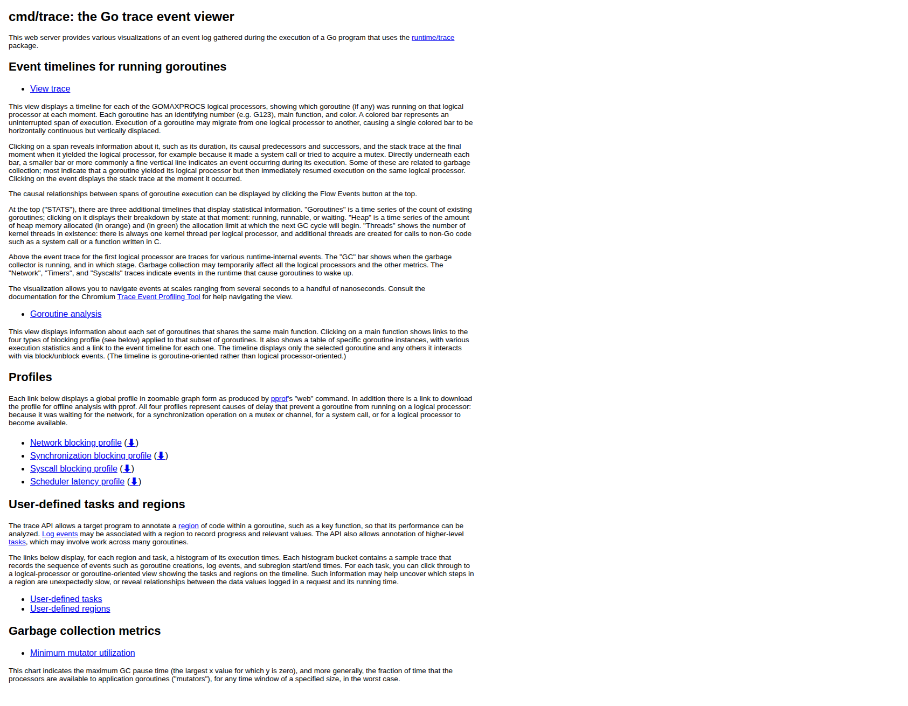
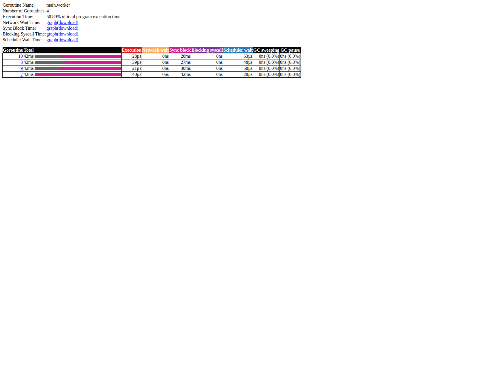
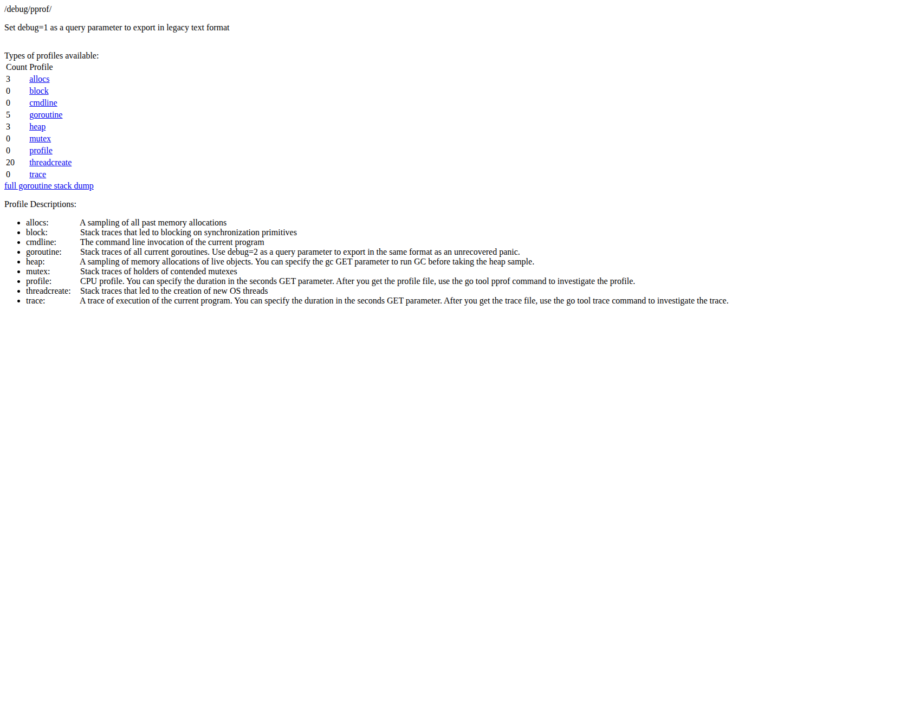
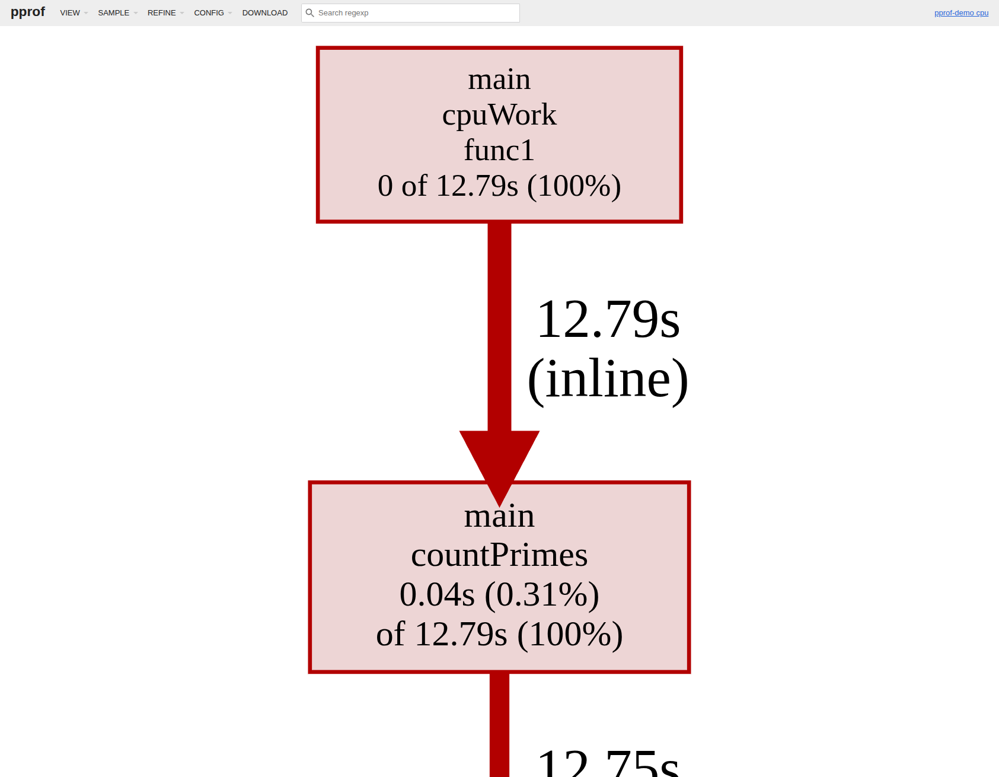
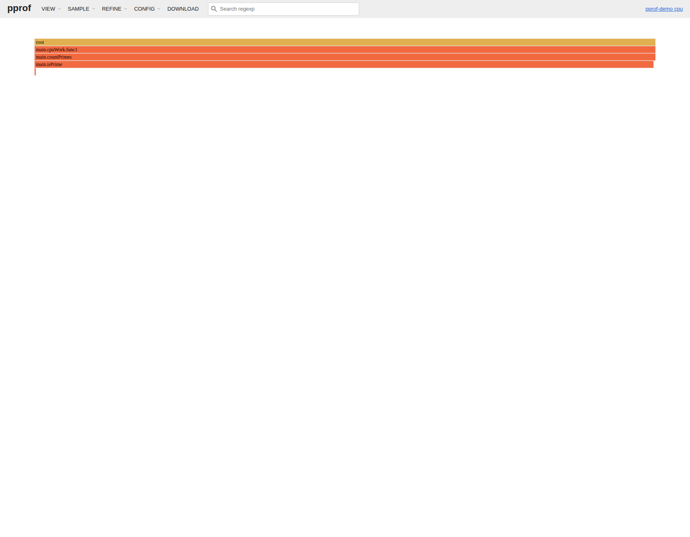
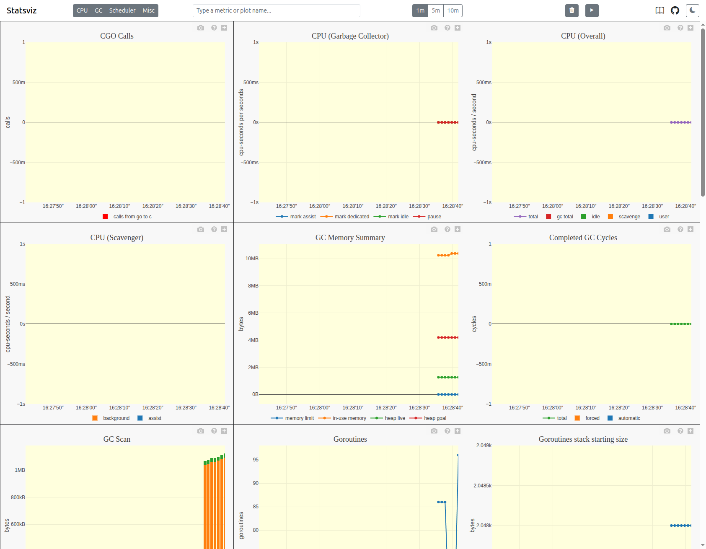
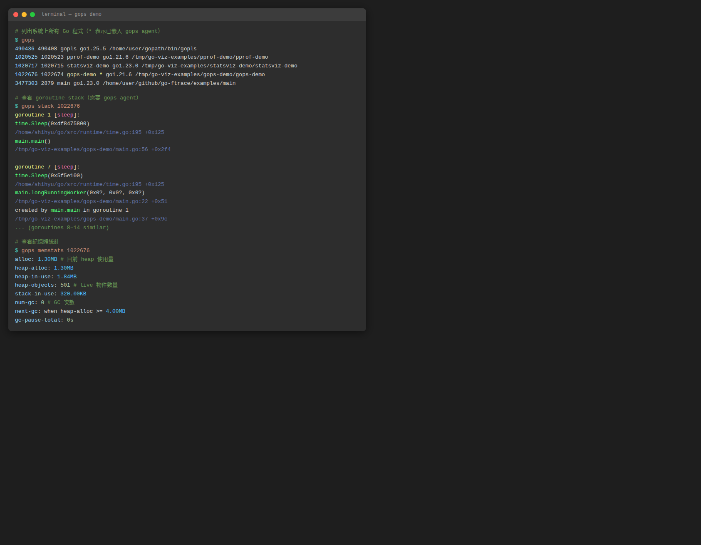
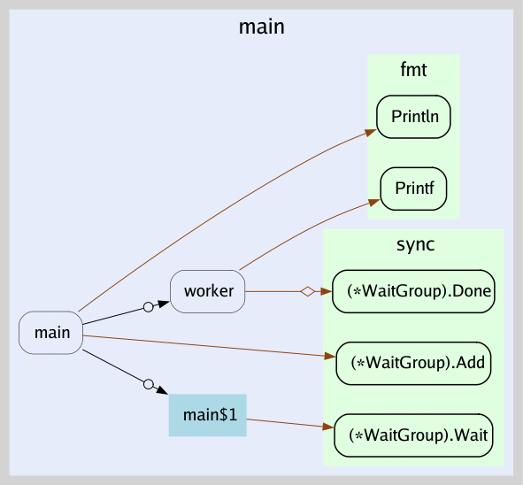
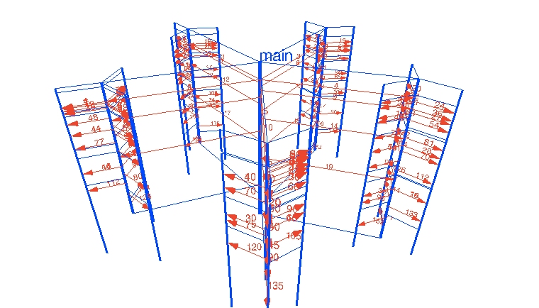

Go 並發視覺化工具整理
Go 官方的 go tool trace、go tool pprof，加上社群的 statsviz、gops、go-callvis、gotrace，可以從不同角度觀察 goroutine 與並發結構。
go tool trace
runtime/trace 搭配 go tool trace 產生時間軸，顯示每個 goroutine 何時執行、阻塞、等待排程，以及 GC、channel、syscall 等事件。
範例程式
package main
import (
"fmt"
"os"
"runtime/trace"
"sync"
"time"
)
func producer(ch chan<- int, n int) {
for i := 0; i < n; i++ {
ch <- i
time.Sleep(1 * time.Millisecond)
}
close(ch)
}
func worker(id int, ch <-chan int, wg *sync.WaitGroup) {
defer wg.Done()
for v := range ch {
time.Sleep(time.Duration(v%3) * time.Millisecond)
_ = v * v
}
fmt.Printf("worker %d done\n", id)
}
func main() {
f, _ := os.Create("trace.out")
defer f.Close()
trace.Start(f)
defer trace.Stop()
ch := make(chan int, 10)
var wg sync.WaitGroup
for i := 0; i < 4; i++ {
wg.Add(1)
go worker(i, ch, &wg)
}
producer(ch, 40)
wg.Wait()
}
使用步驟
# 步驟 1：執行程式，產生 trace.out
go run main.go
# 步驟 2：用瀏覽器開啟 trace UI
go tool trace trace.out
# → 自動開啟 http://localhost:PORT/
# 步驟 3：也可以指定 port 手動開啟
go tool trace -http=:8080 trace.out
在測試中收集 trace：
go test -run TestXXX -trace trace.out ./pkg
go tool trace trace.out
UI 畫面
首頁：列出可用的視圖（時間軸、goroutine 分析、blocking profile 等）

Goroutine analysis：點選 main.worker 可以看到每個 goroutine 的執行時間、Channel 阻塞時間、Scheduler 等待時間明細

適合用來找
- goroutine 排程延遲
- channel、鎖、syscall 導致的阻塞
- GC pause 時間
go tool pprof
pprof 是 Go 官方 profiling 工具，收集 CPU、記憶體、goroutine、mutex 等 profile，並以火焰圖或呼叫圖呈現。
範例程式
在程式中加入 _ "net/http/pprof" 即可開啟 /debug/pprof/ endpoint：
package main
import (
"math"
"net/http"
_ "net/http/pprof"
"runtime"
"sync"
"time"
)
func isPrime(n int) bool {
if n < 2 { return false }
for i := 2; i <= int(math.Sqrt(float64(n))); i++ {
if n%i == 0 { return false }
}
return true
}
func countPrimes(start, end int) int {
count := 0
for i := start; i < end; i++ {
if isPrime(i) { count++ }
}
return count
}
func cpuWork() {
for {
var wg sync.WaitGroup
step := 50000
for i := 0; i < runtime.NumCPU(); i++ {
wg.Add(1)
s := i * step
go func(s int) {
defer wg.Done()
_ = countPrimes(s, s+step)
}(s)
}
wg.Wait()
time.Sleep(50 * time.Millisecond)
}
}
func main() {
go cpuWork()
http.ListenAndServe(":6060", nil)
}
使用步驟
# 步驟 1：執行程式
go run main.go
# 步驟 2：瀏覽器開啟 pprof 端點，確認可用的 profile 類型
# http://localhost:6060/debug/pprof/
# 步驟 3a：收集 CPU profile 並開啟互動式火焰圖 Web UI（採樣 10 秒）
go tool pprof -http=:8081 http://localhost:6060/debug/pprof/profile?seconds=10
# 步驟 3b：收集 heap profile
go tool pprof -http=:8081 http://localhost:6060/debug/pprof/heap
# 步驟 3c：查看 goroutine stack（不需要 Web UI）
curl http://localhost:6060/debug/pprof/goroutine?debug=2
在測試中收集 profile：
go test -run TestXXX -cpuprofile cpu.out ./pkg
go tool pprof -http=:8081 cpu.out
UI 畫面
/debug/pprof/ 端點：列出所有可用的 profile 類型

呼叫圖（Graph view）：方框大小代表 CPU 佔用比例，箭頭粗細代表呼叫頻率

火焰圖（Flamegraph view）：橫軸代表 CPU 時間佔比，縱軸代表呼叫深度

適合用來找
- CPU 熱點函式
- heap 記憶體洩漏
- goroutine leak（goroutine 數量異常增長）
- mutex 競爭
statsviz
statsviz 是輕量套件，整合後即可在瀏覽器即時看到 Go runtime 指標折線圖，無需主動觸發 profile。
需要 Go 1.23+
安裝
go get github.com/arl/statsviz@latest
範例程式
package main
import (
"fmt"
"net/http"
"runtime"
"sync"
"time"
"github.com/arl/statsviz"
)
func spawnWorkers(n int) func() {
var wg sync.WaitGroup
quit := make(chan struct{})
for i := 0; i < n; i++ {
wg.Add(1)
go func() {
defer wg.Done()
for {
select {
case <-quit:
return
default:
data := make([]byte, 512)
_ = data
time.Sleep(10 * time.Millisecond)
}
}
}()
}
return func() { close(quit); wg.Wait() }
}
func main() {
mux := http.NewServeMux()
statsviz.Register(mux)
go http.ListenAndServe(":6060", mux)
fmt.Println("statsviz at http://localhost:6060/debug/statsviz/")
var stops []func()
for round := 0; ; round++ {
n := (round%5 + 1) * 10
stop := spawnWorkers(n)
stops = append(stops, stop)
fmt.Printf("round %d: goroutines=%d\n", round, runtime.NumGoroutine())
time.Sleep(3 * time.Second)
if len(stops) > 2 {
stops[0]()
stops = stops[1:]
}
}
}
使用步驟
# 步驟 1：執行程式
go run main.go
# 步驟 2：瀏覽器開啟
# http://localhost:6060/debug/statsviz/
# → 圖表自動更新，不需要其他操作
UI 畫面
即時顯示 Goroutines 數量、GC Memory Summary、CPU 使用率、Heap 等多個指標

適合用來
- 長時間觀察 goroutine 數量趨勢（是否洩漏）
- 監控 GC 頻率與 heap 大小變化
- 快速確認程式 runtime 健康狀況
gops
gops 是 Google 開發的命令列工具，列出系統上所有 Go 程式，並可即時查看其 goroutine stack 與記憶體狀態。
安裝
go install github.com/google/gops@latest
使用步驟（不需要修改程式）
# 步驟 1：列出所有 Go 程式（* 表示已嵌入 gops agent）
gops
不需要嵌入 agent 就能看到程式清單。
深層查看（需嵌入 agent）
在程式中加入 agent：
package main
import (
"log"
"net/http"
_ "net/http/pprof"
"sync"
"time"
"github.com/google/gops/agent"
)
func longRunningWorker(id int, quit <-chan struct{}, wg *sync.WaitGroup) {
defer wg.Done()
for {
select {
case <-quit:
return
default:
time.Sleep(100 * time.Millisecond)
}
}
}
func main() {
// 啟動 gops agent
if err := agent.Listen(agent.Options{}); err != nil {
log.Fatal(err)
}
quit := make(chan struct{})
var wg sync.WaitGroup
for i := 0; i < 8; i++ {
wg.Add(1)
go longRunningWorker(i, quit, &wg)
}
go http.ListenAndServe(":6060", nil)
time.Sleep(60 * time.Second)
close(quit)
wg.Wait()
}
# 步驟 1：執行程式
go run main.go
# 步驟 2：找到 PID（帶 * 的就是有 agent 的程式）
gops
# 步驟 3：查看 goroutine stack
gops stack <PID>
# 步驟 4：查看記憶體統計
gops memstats <PID>
# 步驟 5：觸發 CPU profile
gops pprof-cpu <PID>
輸出範例

適合用來
- 快速確認某個程式的 goroutine 數量
- 不重啟程式就能取得 goroutine stack snapshot
- 排查 goroutine leak 的第一步
go-callvis
go-callvis 透過 pointer analysis 建構 call graph，以 Graphviz 產生互動式 SVG 圖，適合理解專案結構與找 goroutine 啟動點。需要先安裝 Graphviz。
安裝
# 安裝 go-callvis
go install github.com/ofabry/go-callvis@latest
# 安裝 Graphviz（Ubuntu/Debian）
sudo apt install graphviz
使用步驟
# 步驟 1：在專案目錄執行，自動開啟瀏覽器顯示互動式圖表
go-callvis .
# 步驟 2：或輸出成 PNG 靜態圖檔
go-callvis -format=png -file=callgraph <module-name>
# 步驟 3：指定特定 package
go-callvis github.com/your/project/cmd/server
輸出範例
以下是一個 worker pool 程式的 call graph，圓形箭頭（o→）代表 goroutine 啟動：

適合用來
- 理解大型專案的函式呼叫關係
- 找出哪些地方啟動了 goroutine
- 確認 concurrent call 路徑
gotrace
gotrace 是 3D WebGL 視覺化工具，把 goroutine 與 channel 互動轉成動畫，偏教學與展示用途。

⚠️ 相容性警告：gotrace 使用 Go 1.5-1.7 時代的 trace 格式，與 Go 1.8+ 產生的 trace.out 不相容，且不支援 Go modules。目前無法在現代 Go 環境中實際執行，僅作為概念參考。若需要視覺化效果，建議改用
go tool trace。
適合說明 worker pool、fan-out、fan-in 等並發模式，讓團隊直觀理解 goroutine 的建立與阻塞。
選擇建議
| 工具 | 類型 | 適合用途 | 可用狀態 |
|---|---|---|---|
go tool trace | 官方時間軸 | 排查 goroutine 排程延遲、channel/鎖阻塞、GC pause | ✅ |
go tool pprof | 火焰圖 / 呼叫圖 | CPU 熱點、記憶體洩漏、goroutine leak 深層分析 | ✅ |
statsviz | 即時折線圖 | 長時間監控 goroutine 數量、GC、heap 趨勢（需 Go 1.23+） | ✅ |
gops | 命令列 | 快速診斷任意 Go 程式，不需事先埋點 | ✅ |
go-callvis | 呼叫圖 | 理解大型專案結構、找 goroutine 啟動點 | ✅ |
gotrace | 3D 動畫 | 教學、展示並發模式 | ❌ 不相容現代 Go |
建議使用順序：
gops：不需改程式，先確認 goroutine 數量是否異常statsviz：嵌入後長時間觀察 runtime 指標趨勢go tool pprof：發現異常時深挖 CPU 或記憶體熱點go tool trace：需要時間軸細節時使用go-callvis：要理解整體呼叫結構時補充